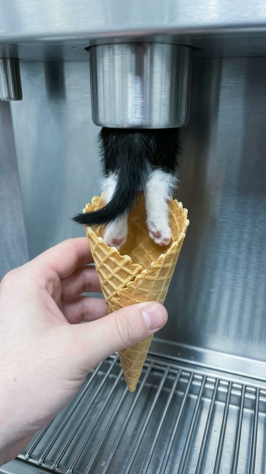
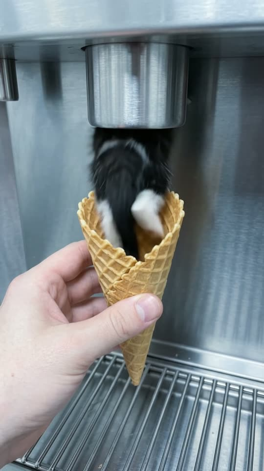
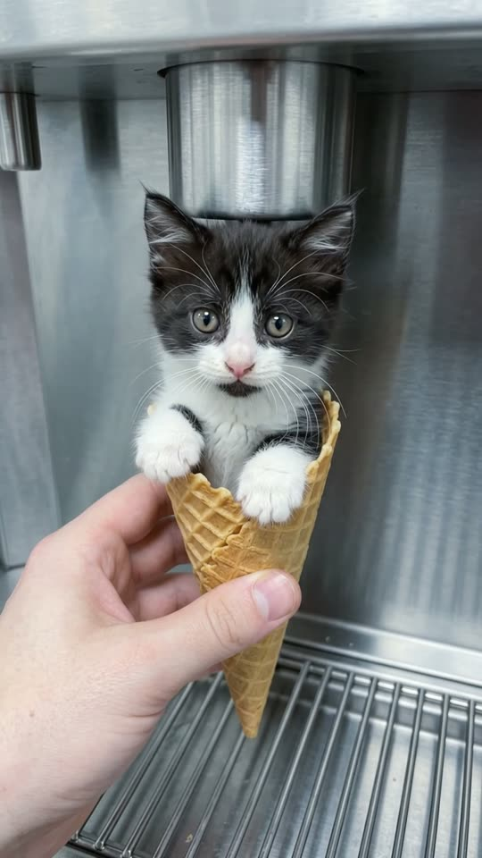
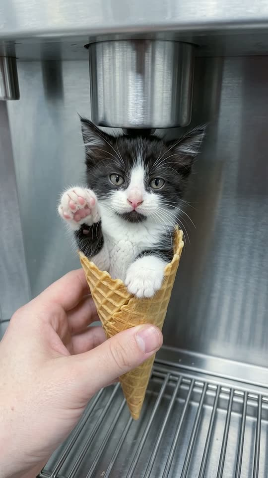

Free prompt pack
Held out a cone.Got a kitten.
A hand holds a waffle cone under a soft-serve machine. Out comes a tail, then two back legs, then the rest of a tiny black-and-white kitten, who settles in with his paws on the rim and says hi. One still image and one prompt, in one take.
Both prompts, in the order I ran them. Slide the cone under the nozzle and catch three scoops to reveal each prompt. Tap the shop for sprinkles.
The first frame
The tail is already in the cone. This image is frame one: a hand holding a waffle cone under the nozzle of a stainless soft-serve machine, and the fluffy tail and back legs of a kitten already sliding down into it.
Watch out
Start the image with the trick already happening. A tail coming out of the nozzle sells the idea in the first second and fixes the kitten's fur before the take even starts.

The prompt 112 words
Real close-up photo of a left hand holding a large empty waffle cone upright, right under the nozzle of a brushed stainless steel soft-serve machine, a metal drip tray grille below. Out of the nozzle, instead of ice cream, the fluffy black tail and two small white hind legs of a real tiny kitten are sliding straight down into the cone, as if the machine were pouring it like soft serve: long soft black-and-white fur, pink toe beans. The waffle cone is golden with a crisp diamond pattern, the hand pale, the thumb on the front of the cone. Cool even indoor light, shallow depth of field, sharp fur detail, natural colour.
Tail, legs, kitten
Ten seconds, handheld, 30 cm from the cone. Add the image as the reference, set 10 s, 9:16, 720p and audio on, and paste the prompt whole.
- 0–3 sit pours out
- 3–5 sthe head pops up
- 5–7 spaws on the rim
- 7–10 ssays hi
Watch out
Say what it is never allowed to become: never ice cream, never cream, never a plush toy. Fur squeezing through a nozzle is exactly where a model starts melting things.
Fragments



The prompt 965 words
FORMAT Real handheld close-up video filmed by the person holding the cone, seen as the finished exported video file: the full picture edge to edge, nothing on top of it. Whatever records the picture is never in frame. One continuous take in real time, no cuts. Vertical frame. The video runs at 24 fps. No frame is repeated. Real time, 1x speed, never slow motion. SCENE A hand holds a waffle cone under the nozzle of a soft-serve machine. Instead of ice cream, a tiny black-and-white kitten comes out of the nozzle and pours down into the cone like soft serve: tail and hind legs first, then its fluffy body, which coils round once in the cone like a swirl. Its head pops up, it settles with its front paws over the rim, looks straight into the lens and holds up a paw in a peace sign. The tail and hind legs are already sliding into the cone in the first frame. The take ends with the kitten sitting in the cone making the peace sign. REFERENCE IMAGE Use it for the machine, the nozzle, the cone, the hand, the kitten's fur and the light. Everything matches it exactly, zero drift, no smoothing. The movement is described below. THE KITTEN One real kitten, about nine weeks old, small enough to fit in the cone: long fluffy black-and-white fur; a black cap over both ears and the top of the head, split by a white blaze down the middle of the face; a white muzzle, chin, chest and paws; a pink nose and pink toe beans; big round amber eyes; tufted ears; a fluffy black tail. It moves like a real kitten: soft, a little clumsy, whiskers twitching, slow blinks. The same kitten in every frame; never a plush toy, never a cartoon, never ice cream. THE CONE AND THE HAND A large golden waffle cone with a crisp diamond pattern, about 20 cm tall. A pale left hand holds it from frame-left, thumb on the front, perfectly steady under the nozzle the whole time. The cone never cracks, never bends. LOCATION MAP We are 30 cm from the cone, at the height of the nozzle, looking straight at the front of a brushed stainless steel soft-serve machine. The nozzle is at the top centre of the frame; the cone is right under it in the middle; the hand comes in from frame-left; a metal drip tray grille is at the bottom. FIRST FRAME The nozzle at x 32-58%, y 6-22%; the cone at x 34-60%, y 30-80%; the hand at x 0-50%, y 52-95%; the drip tray grille at y 86-100%. The kitten's black tail and two white hind legs hang from the nozzle down into the cone at x 40-54%, y 20-38%. Instant read: a kitten coming out of an ice cream machine. No delayed reveal. CAMERA Handheld and steady, close: only the slightest natural sway. It stays on the cone from the first frame to the last. It never cuts, never zooms, never moves away, never shows anything but the machine, the cone and the hand. ACTION TIMING 0–1.5 s — The tail and the hind legs slide further down into the cone, paws dangling. 1.5–3.0 s — The rest of the fluffy body pours out of the nozzle after them, back first, soft fur squeezing out of the opening and dropping into the cone. 3.0–4.2 s — The fluffy body coils round once inside the cone like a soft-serve swirl, the black tail flicking up at the top; the nozzle is empty above it. 4.2–5.0 s — The kitten's head pops up out of the swirl at frame-left, looking down into the cone, and it turns to face us. 5.0–7.0 s — It settles upright in the cone, both white front paws hooked over the rim, and looks straight into the lens with big amber eyes; its ears twitch. 7.0–8.5 s — It lifts its right front paw beside its face, the paw curled, only two toes sticking straight up and apart in a V, pink toe beans toward us: a peace sign. 8.5–10 s — It holds the peace sign and blinks slowly. Hold to the last frame. PHYSICS AND SCALE Real size: the kitten is about 20 cm long without the tail, the cone about 20 cm tall, the nozzle opening about 5 cm wide. The kitten's fur squeezes through the nozzle softly and fluffs back out, like real fur, never like cream. The cone takes its weight and dips a little in the hand. One kitten, one cone. Nothing morphs. NO FULL-FRAME EVENTS Nothing fills the frame: the kitten's body never covers the whole picture; the nozzle, the cone or the hand stay visible in every frame. LIGHTING Cool, even indoor light; soft highlights on the stainless steel; the white fur bright but with detail. AUDIO No music, no score, no narration, no subtitles. The low hum of the machine, the soft whoosh of fur sliding out of the nozzle, a tiny thump as the kitten lands in the cone, a small kitten "mew" at the peace sign. No words. LOOK Real handheld close-up footage, seen as the finished exported file: shallow depth of field, crisp fur detail, natural colour, light compression, no colour grade, no film grain, no lens flare, no slow motion, never CGI, never a cartoon. No camera app interface: no shutter button, no gallery thumbnail, no record button, no icons, no timer, no recording dot, no frame lines. POSITIVE LOCKS One kitten, one cone, one hand. No ice cream at any moment. No other people. No captions, no subtitles, no on-screen text, no watermark, no logos, nothing on top of the picture. ONE KITTEN. ONE CONE. NO CUTS. NO ZOOM. NO SLOW MOTION. NO MUSIC.
Rule 01
The trick goes in frame one
Don't spend seconds on an empty cone. Start with the tail already coming out and the viewer gets it before they can scroll.
Rule 02
Count the turns
One swirl you don't count is a swirl you don't get. Say how many turns and what passes in front of the lens on each one.
Rule 03
Give the tail a place
Long tails wander. Say where it stays and that it never crosses the face, or one shows up where it shouldn't.
That's the whole build
Now go ordersomething impossible.
If yours works, send it over. I read every DM and the good ones end up on the account.
@martiiifons